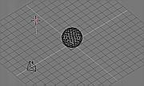

Самое начало. Часть 2
Как добавлять Объекты
Поместите 3D-курсор на одну клетку выше плоскости. Для переключения между Видом сверху и Видом спереди используйте клавиши PAD_7 и PAD_1 соответственно.Вызовите всплывающую панель инструментов (ToolBox) по клавише SHIFT+A. В ней подсвечен пункт "Добавить" (Add). Нажмите левую кнопку мыши и выберите пункт "ADD->Mesh". Выберите "IcoSphere" из списка примитивов. Панель инструментов закроется, а вместо нее Вы увидите маленькое диалоговое окошко. Нажимая мышкой на левую или правую сторону этого окошка, задайте количество подразделений (subdivision) этой формы ("3" дает хороший результат). Нажмите "OK" или ENTER.
Вы только что добавили новый Объект со своим Каркасом в том месте пространства, где у Вас находился 3D-курсор. Этот Объект автоматически находится в режиме редактирования (EditMode), в котором Вы можете редактировать его вершины и грани.
Пока мы не будем этого делать, мы нажмем TAB и выйдем из режима редактирования (EditMode).
Итак, у нас есть 3 Объекта. Вы можете выбрать любой из них: нажмите на правую кнопку мыши вблизи от проволочной модели (wireframe).
Теперь добавим свет. Расположите 3D-курсор где-нибудь вне сферы, например, на расстоянии 3-4 клеточек от нее.
Нажмите SHIFT+A. Всплывет панель инструментов в том состоянии, в котором Вы из нее вышли (в нашем случае "ADD->IcoSphere"). Чтобы подняться вверх по меню нажмите на кнопку "ADD" правой кнопкой мыши или переведите курсор на левую сторону панели инструментов. Далее выберите "ADD->Lamp".

{kind=link}
Увеличенное изображение - по левой кнопке мыши.
Вы добавили Лампу в то место, где у Вас был расположен 3D-курсор. У этого Объекта нет Режима редактирования.
Нажмите PAD_0 (видоискатель камеры). В этом виде вы также можете выбирать Объекты.
Нажмите клавишу "G" (GKEY - Grabber - режим "захвата") и мышкой разместите Объект с учетом Вашей композиции. Нажмите на левую кнопку мыши для подтверждения перемещения. В этом виде также можно перемещать камеру.
Когда Вы скомпонуете свою композицию, нажмите F12 и запустите рендеринг.
Рендеринг простых сцен, подобных этой, проходит быстро, однако Вы все равно должны успеть заметить, что рендеринг "блокирует" программу и курсор мышки превращается в красный квадратик, на котором показан номер текущего кадра.
Изображение, полученное в результате рендеринга, накладывается на 3D вид. Для того, чтобы убрать его нажмите ESC или F11. Для того, чтобы снова посмотреть результат рендеринга нажмите F11.
Правда же, просто!?
Свойства Материала
Пришло время поработать с окном ButtonWindow внизу ЭкранаНаверху, в заголовке окна ButtonWindow вы видите ряд пиктограмм всех групп кнопок, которые есть в программе.
Сначала пойдем в группу MaterialButtons. Нажмите кнопку, на которой нарисован красный шар.
Теперь, в окне 3DWindow левой кнопкой мыши выберите Объект "Плоскость". Обратите внимание на то, что кнопки Материала всегда показывают параметры активного Объекта.
Полное описание кнопок будет дано в следующей главе. Пока найдите следующие слайдеры:
- "R"(красный) "G"(зеленый) и "B" (голубой): каналы (компоненты) цвета.
- "Ref": коэффициент отражения (отражающая способность).
- "Spec": (specular) зеркальный компонент (блеск, блик)
- "Hard": жесткость, величина блика.
Вернемся в окно 3DWindow. Правой кнопкой мышки выберите Объект "Сфера". У этого нового Объекта пока нет Материала. Для задания Материала этому Объекту надо использовать кнопку "меню" в заголовке окна Buttons:
Нажмите на эту кнопку и, удерживая ее нажатой, в появившемся меню выберите:
- 'Material' (Материал): если вы хотите задать сфере такой же Материал, что и Плоскости.
- 'ADD NEW' (Добавить новый): если вы хотите добавить новый блок "Материал".
Проведите рендеринг (F12) и посмотрите, как выглядит новый Материал. Обратите внимание на то, что на изображении видны грани "Сферы". В функции Материала не входит сглаживание Объекта путем интерполяции перпендикуляров. Это параметр Каркаса, причем сглаживание можно задавать выборочно по граням. Зайдите в EditButtons (F9) и нажмите кнопку: "Set Smooth" (Сглаживание).
Теперь выполните рендеринг - F12 - и посмотрите результат.
-> Часть 3